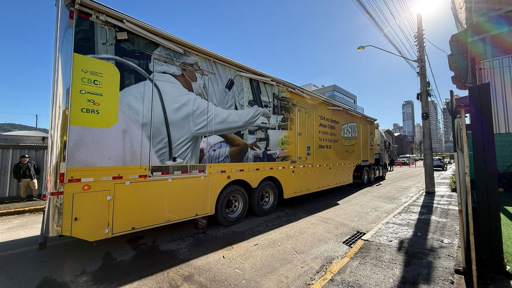

Multivacinação, Agosto Lilás e obras nos bairros: o que a Prefeitura de Itapema anunciou esta semana
Multivacinação, Agosto Lilás e obras nos bairros no balanço da Prefeitura.
São dois dias de atendimento gratuito no Jardim Praiamar. O projeto é da Convenção Batista Brasileira e tem apoio da Secretaria de Saúde de Itapema.
Em 30 segundos · Modo de Leitura, formato original Santa Informa
A Carreta Missionária atende no Jardim Praiamar nesta sexta e no sábado, de graça.
Sexta (7): das 13h às 17h. Sábado (8): das 9h às 11h30 e das 13h às 17h.
Tem médico, dentista e psicólogo, além de aferição de pressão, teste de glicose, corte de cabelo e orientação de saúde. É na Primeira Igreja Batista de Itapema, rua 454, nº 63.
Poder PúblicoPublicada em Redação Santa Informa

A Carreta Missionária é um projeto social da Junta de Missões Nacionais da Convenção Batista Brasileira. Em Itapema, a passagem tem apoio da Prefeitura, pela Secretaria de Saúde.
O atendimento é gratuito e acontece na Primeira Igreja Batista de Itapema (PIB), na rua 454, nº 63, bairro Jardim Praiamar.
Sexta-feira, 7 de agosto: das 13h às 17h.
Sábado, 8 de agosto: das 9h às 11h30 e das 13h às 17h.
Consulta com médico, dentista e psicólogo. Também aferição de pressão arterial, teste de glicose, corte de cabelo e orientação de saúde.
É o tipo de serviço que costuma pedir encaixe na agenda da UBS e que, neste fim de semana, está disponível na esquina, sem fila de marcação.
A Prefeitura não anunciou necessidade de agendamento nem lista de documentos. Ainda assim, levar documento com foto e o cartão do SUS é precaução barata, e chegar cedo costuma valer em atendimento por ordem de chegada.
O resumo de 30 segundos está no topo e a versão completa é o texto acima. Aqui ficam as três leituras da casa sobre o mesmo assunto.
Clara, a otimista
Dentista e psicólogo de graça, sem marcação, a dois dias de distância. Para muita gente do Jardim Praiamar isso resolve uma consulta que ficaria meses na espera.
E é bonito ver serviço religioso e secretaria de saúde puxando o mesmo carrinho. Cada um faz o que sabe, e quem ganha é o morador do bairro.
Seu Prudêncio, o criterioso
Vale acompanhar a capacidade. Dois dias de carreta não substituem rede de atenção básica, e o risco de fila grande em atendimento sem senha divulgada é real. Uma sugestão útil seria a Prefeitura informar quantos atendimentos cabem por período.
Merece atenção também o encaminhamento. Consulta pontual que identifica um problema precisa desaguar em algum lugar dentro do SUS municipal, senão vira diagnóstico sem tratamento. Se essa ponte existe, seria bom estar escrita na divulgação.
Dito isso, levar serviço até o bairro em vez de esperar o bairro chegar à unidade é a lógica correta, e a parceria merece registro.
Caco, o sarcástico
Consulta, dentista, psicólogo e corte de cabelo no mesmo endereço. É praticamente um plano de saúde com serviço de estética embutido.
O corte de cabelo junto do psicólogo é combinação sábia. Metade da terapia deste país acontece na cadeira do barbeiro mesmo.
Piada à parte, quem mora longe da unidade sabe o que significa não precisar pegar ônibus para aferir pressão.
Fontes: Prefeitura de Itapema, Secretaria de Saúde, e Junta de Missões Nacionais da Convenção Batista Brasileira.
Multivacinação, Agosto Lilás e obras nos bairros no balanço da Prefeitura.
Oficinas de cultura e curso de qualificação, os dois de graça.
Viva Praia tem edição de Dia dos Pais no sábado, na Orla Central.